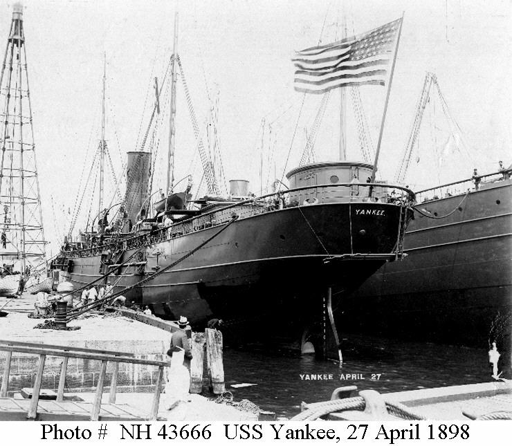

Link Index
MWDC
Home Page
Shipwrecks Page
Albert Galatin
Alice M. Colburn
Alice M. Lawrence
Ardandhu
Barge and Crane
California
Charles S. Haight
Chelsea
Chester Poling
City of Salisbury
Corvan
Dixie Sword
Edward Rich
French Van Gilder
Henry Endicott
Herbert
Herman Winter
Hilda Garston
HMCS St. Francis
James Longstreet
John Dwight
Kershaw
Kiowa
Lackawanna
Lunet
Mars
Pemberton
Pendleton
Pinthis
Port Hunter
Pottstown
Romance
Seaconnet
Trojan
USS Grouse
USS New Hampshire
USS Triana
USS YSD
Vineyard Sound
Lightship
|

Description: Auxiliary Cruiser; Iron
Dimensions:
length - 406 ft. 1½in.
width - 48 ft. 4½in.
depth - 21ft. 1 in.
Tonnage:
gross -
other - Displacement - 6225
Propulsion: Steam; Single propeller
Machinery: 3 Cylinder Triple expansion engine, cylinder diameters measuring 32", 52", 84" with a stroke of 54"; 3 coal fired boilers.
Cargo: Not Applicable
The Shipwreck
Date Sunk: December 5, 1908
Cause: Foundered
Location: Buzzard's Bay, 3 miles east of Round Hill Point.
Coordinates:
Latitude, 41o - 32' - 30"N
Longitude, 70o - 52' - 40"W
Loran: 14205.6 and 43975.9
June 15, 1908 the auxiliary cruiser USS Yankee, a veteran of the Spanish American War, was recommissioned into the United States Navy in the capacity of a training ship. The summer of that year was spent cruising between Boston and Chesapeake Bay, with either Naval Academy midshipmen or naval militia reservists learning the rigors of shipboard life.
September 23rd, while on one such training maneuver Yankee ran aground on Spindle Rock near Westport. A dense fog compounded by smoke from nearby forest fires, obscured visibility in Buzzards Bay and led to the steamers demise. Grounding at high tide her bow was held fast in the ledge's rocky embrace while her stern was partially submerged.
The Navy attempted to patch Yankee's hull with 1000 bags of cement. After this failed an $85000 salvage contract was awarded to Mr. John Arbuckle and Mr. W.W. Weatherspoon. Salvage work commenced in October, Weatherspoon had proved that sunken hulks could be raised with compressed air. After Yankee's guns were removed to lighten the ship and divers patched the hull, water was driven out using air compressors. The warship refloated on December 4 th, but the strain of those months on the ledge had weakened the steamer's hull. On December 5th, heavy seas caused Yankee to founder while in tow to New Bedford.
Back to Top
Dive Site Conditions
Depth in feet:
maximum - 55
minimum -
Visibility in feet:
average - 5
Chunks of Yankee's hull cover a wide area of the bottom. An anchor hawse pipe identifies the bow while the stern's rudderposts give that part of the ship away. Although most of the debris has a low profile some sections rise ten feet off the bottom. Swift currents, low visibility and jagged metal can make this wreck hazardous.
Many fine artifacts have come off Yankee including portholes the vessel originally had 180, china, deadeyes, cage lamps…
Back to Top
Historical Background
Constructed:
year - 1892;
where - Newport News, Virginia.
builder - Newport News Shipbuilding and Drydock Company.
Construction details: 2 Iron Decks and a Hurricane deck; Houses on Deck; 5 Bulkheads; Bark rigged.
Crew: 600 ;
Master:Commander Charles C. Marsh (1908); Comdr. G.P. Colvocoressee (1903-06); Comdr. Willard H. Brownson (1898-99); J.W. Hawthorne (1892-98).
Owners:United States Navy.
Home or Hailing Port: Boston, Massachusetts.
Former Name(s), date(s): El Norte (1892-1898).
Official number: 136316 (El Norte).
Country: U.S.A.
Other Comments: Formerly the Southern Pacific Company, passenger liner El Norte. After the outbreak of hostilities between the United States and Spain, the Navy acquired El Norte on April 6, 1898. Renamed Yankee she was fitted with (10) 5 inch guns, (6) 6 pounders and 2 Colt machine guns. On April 14, 1898, Yankee was commissioned, at New York, as an auxiliary cruiser. She patrolled the East Coast of the United States between Block Island and Cape Henlopen until May 27th. On May 29th she put to sea with orders to join the fleet off Cuba. June 6th she dueled shored batteries off Santiago. On the 7th she participated in a cable cutting incursion at Guantanamo Bay. In company of the USS Marblehead, Yankee engaged two Spanish gunboats Alvarado and Sandoval putting them to flight. Meanwhile USS St. Louis cut the cables. Yankee and Marblehead then turned their fire on the fort at Caimanera, silencing it. On June 13th Yankee engaged the Spanish gunboats Diego Velazquez and Lince, putting them both to flight. She also engaged the Sanbanilla Shore Battery before returning to blockade duty off Cienfuegos. Between June 13th and July 17th Yankee performed blockade duty, inspected vessels for contraband and returned to the U.S. to load ammunition for the fleet off Cuba. After the cessation of hostilities Yankee was decommissioned at League Island, Pennsylvania, March 16, 1899.
Recommissioned May 1, 1903, Yankee served as a training vessel. Between January of 1905 and August 1906 Yankee supported US forces ashore at Santo Domingo, Cuba. September 25, 1906, Yankee was decommissioned at Portsmouth, N.H., by then she had been reclassified as a transport.
Recommissioned June 15, 1908, Yankee resumed her role as a training ship until her demise.
Back to Top
Salvage
While aground on Spindle Rock, the cruiser's guns were removed. Some salvage was undertaken from December 5, 1908, to September 1920. In that year the vessel was dynamited as a hazard to navigation.
Back to Top
Sources:
Dictionary of American Naval Fighting Ships; Navy Dept.
Fishable Wrecks and Rockpiles; Coleman & Soares, 1989
Naval Historical Center; photographic section
New England's Legacy of Shipwrecks; Keatts, 1988
The Record, "American Lloyds", American Bureau of Shipping; 1898
Back to Top
These files are under construction. Any information, specifically dive site related, would be greatfully appreciated.
Send comments to: Chris Hugo
Copyright © 2000 by Christopher C. Hugo
Massachusetts Board of Underwater Archaeological Resources
All Rights Reserved
|